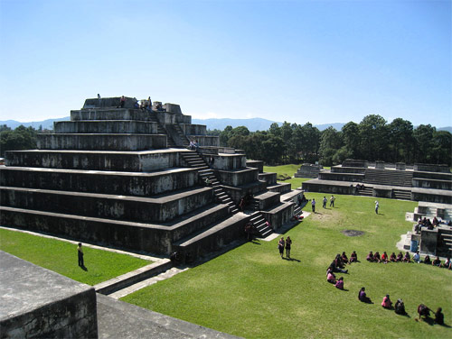
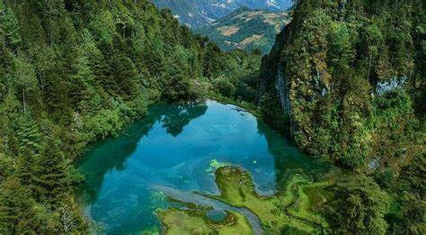
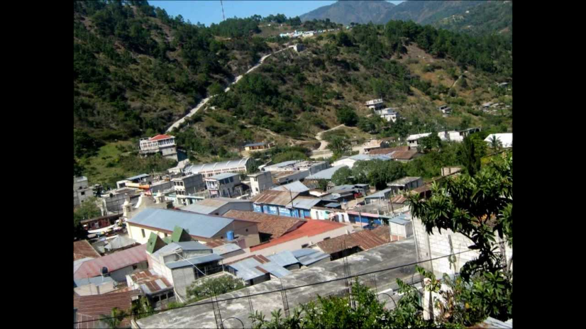
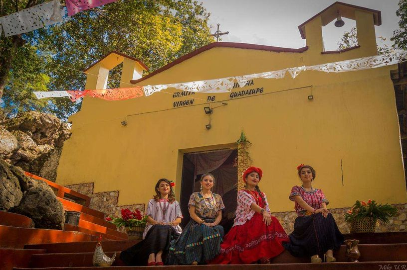
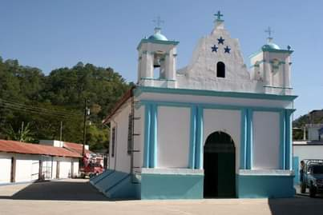
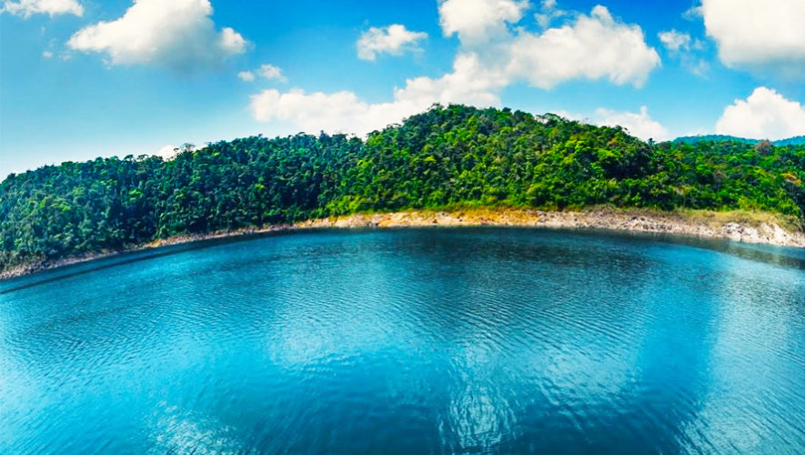
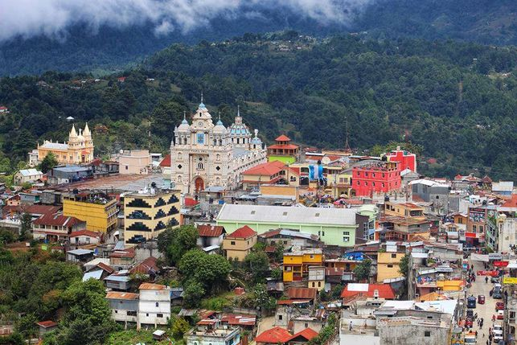

¿Qué es un municipio?
Un municipio es una entidad territorial autónoma que se encarga de administrar los asuntos locales dentro de su territorio.
Cada municipio tiene un gobierno local encabezado por un alcalde y un concejo municipal, quienes son elegidos por la población a través de elecciones periódicas. El gobierno municipal tiene la responsabilidad de tomar decisiones y gestionar los servicios y recursos públicos a nivel local.
Huehuetenango
Fue fundada por los españoles en 1524 y se convirtió en un importante centro administrativo y religioso durante la época colonial.
La ciudad de Huehuetenango es conocida por su diversidad cultural y sus tradiciones.
Las Ruinas de Zaculeu: son un sitio arqueológico situado en el departamento de Huehuetenango, en Guatemala. Zaculeu fue la capital de los mayas Mam, una civilización que floreció en la región occidental de Guatemala.
El sitio arqueológico de Zaculeu está compuesto por varias estructuras, incluyendo pirámides, templos, palacios y plazas. La estructura más destacada es la Gran Plaza, que cuenta con una plataforma elevada y una serie de templos y palacios a su alrededor. También se pueden encontrar juegos de pelota mesoamericanos en el sitio.

Chiantla
Ofrece atractivos naturales como cerros, bosques y ríos, que son ideales para actividades al aire libre como caminatas, observación de aves y paseos en bicicleta.
El municipio también es reconocido por su iglesia colonial, la Iglesia de Chiantla, construida en el siglo XVI y considerada uno de los monumentos históricos más importantes de la región.
Laguna Magdalena: es una de las áreas protegidas del departamento, se localiza en la Villa de Chiantla. Su color azul oscuro en el centro contrata con el verde turquesa de las orillas, creando tonalidades increíbles. Se puede ir a visitar durante cualquier época del año, pero siempre tendrá un clima frío.

Aguacatán
Es un municipio ubicado en el departamento de Huehuetenango, Guatemala, conocido por su belleza natural, su rica cultura indígena y su importancia en la producción agrícola, especialmente en el cultivo de café.
Nacimiento del Río San Juan: puede observar el nacimiento del famoso Río San Juan. Este destino cuenta con diversas áreas de relajación rodeadas de naturaleza, siendo el principal espectáculo el nacimiento de dicha belleza acuática de este departamento. Este lugar es muy importante, ya que el agua abastece a muchas comunidades que lo rodean.

Colotenango
El nombre proviene del náhuatl Cotoli, que significa Alacrán, y Tenango que quiere decir Lugar amurallado. Esto da como resultado Lugar amurallado habitado por alacranes.
oportunidad de sumergirse en la cultura y las tradiciones indígenas a través de la visita a comunidades locales, donde se puede aprender sobre la producción artesanal, la música y las prácticas agrícolas tradicionales.

Concepción Huista
Cuenta con paisajes montañosos, valles y ríos que ofrecen una gran diversidad de ecosistemas y oportunidades para actividades al aire.
Ofrece a los visitantes la oportunidad de explorar su cultura indígena a través de la visita a comunidades locales, donde se puede aprender sobre la producción artesanal, la música y las prácticas agrícolas tradicionales.

Cuilco
Cuenta con paisajes montañosos, valles y ríos que ofrecen una gran diversidad de ecosistemas y oportunidades para actividades al aire.

Jacaltenango
Es conocido como el corazón y centro de la región Huista por su ubicación geográfica
Jacaltenango se origina del idioma náhuatl Xacalli, lo cual significa Rancho o Cabaña. Una teoría describe que el significado es Jacales o Cabañas Amuralladas. Otra menciona que podría se Casa de Agua.
Río Azul: rodeados de una buena vegetación fresca y exuberante, así mismo se puede disfrutar con toda la familia y hacer de esta experiencia una aventura inolvidable. Un paraíso fuera de lo común, donde el agua es del color del cielo, fría al nacer en lo alto de las montañas de Huehuetenango.

La Democracia
Se divide políticamente en un pueblo cabecera, 27 aldeas, 40 caseríos y 10 cantones. En cada uno de ellos podrá presenciar un hermoso paisaje formado por las casas de adobe, con sus humeantes chimeneas y cafetales. Además, las notas de la marimba son el mejor acompañante al explorar el pueblo, rodeado de majestuosas montañas y abrigado por el sol.

La Libertad
Predominan tres unidades bio climáticas, los suelos son eminentemente de vocación forestal y la economía depende en gran parte de la agricultura, como complemento se encuentran la actividad pecuaria y artesanal.
La Montaña Peña Blanca: formación rocosa que alcanza una altura de 3,518 metros sobre el nivel del mar, y que forma parte de la cordillera de Los Cuchumatanes. Se ubica cerca de la frontera con México, específicamente en el municipio La Libertad.

Malacatancito
El nombre es un diminutivo español de Malacatán, como se le conoció a la localidad por mucho tiempo. De hecho, durante la época colonial su nombre fue Santa Ana Malacatán.
Río serchil: ofrece un ambiente unico para poder descansar y contemplar la vista con el bello bosque, un lugar ideal para nadar y ser parte de la naturaleza.

Nentón
Durante la época colonial estaba muy alejado y no hubo poblados establecidos formalmente en la región, aunque en 1754 pasó a ser parte de la parroquia que estableció el clero secular en Jacaltenango.
Cenotes de candelaria: un destino turístico por excelencia para personas aventureras, familias, parejas, entre otros. Se trata de dos lindas pozas de agua cristalina conectadas por una serie de ríos subterráneos que crean un paisaje único.

Todos Santos Cuchumatán
A 3,300 metros sobre el nivel del mar. Además de ser uno de los lugares más fríos del país, la vista que se observa es impresionante debido al bosque nuboso y un clima espectacular.
Llamas: en la entrada a la Sierra de Los Cuchumatanes, exactamente en la aldea Chiabal se puede visitar el curioso lugar Llamas de los Cuchumatanes, en donde Guayo, Chimeca, Florecita y sus demás amigos te darán la bienvenida al municipio de Todos Santos Cuchumatán.

San Antonio Huista
Huista se origina del apócope de Huistán, que a la vez proviene de un vocablo náhuatl Huitztlan. Esto significa Lugar de espinas o Paraje espinoso.
El pueblo fue fundado durante la Colonia, entre los años 1528 y 1529. Pero fue hasta 1950 cuando se constituyó como municipio independiente.
Ermita de la virgen de Guadalupe: el pueblo fue fundado durante la Colonia, entre los años 1528 y 1529. Pero fue hasta 1950 cuando se constituyó como municipio independiente.

San Gaspar Ixchil
Tras la conquista de Guatemala en 1524, fue fundado por los frailes dominicos quienes posteriormente lo cedieron junto con el resto de sus doctrinas más occidentales a los frailes mercedarios, y a partir de entonces fue una doctrina del convento de Santa Ana Malacatán. En 1754 los mercedarios tuvieron que entregar sus doctrinas al clero secular y San Gaspar pasó a ser parte del curato de Malacatán en la Provincia y Alcaldía Mayor de Totonicapan.

San Ildefonso Ixtahuacán
Pueblo de origen prehispánico, habitado por indígenas del grupo mam, su nombre original era Itcal.
San Ildefonso Ixtahuacán celebra sus fiestas patronales en honor a San Ildefonso el 23 de enero.
Antes de la llegada de los españoles al continente americano, el territorio de dicho municipio estaba habitado por una población de origen mam.

San Juan Atitán
San Juan Atitán es un municipio cuyos orígenes son remotos. Se estima que ya existía como pueblo cuando los españoles colonizaron Guatemala, quienes lo pusieron bajo la advocación de San Juan. Debe su nombre a San Juan: en honor a San Juan Bautista y Atitán que significa «Cerca del agua». En diciembre de 1935 el entonces municipio de Santa Isabel fue suprimido por Acuerdo Gubernativo y anexado como aldea a San Juan Atitán.

San Juan Ixcoy
Es un municipio rico en cultura y arte maya, su diversidad de idiomas, sus trajes típicos, su historia, sus comidas, sus fiestas patronales.

San Mateo Ixtatán
El pueblo se estableció en el lugar a principios del siglo XVI. Todo esto fue a causa de los repartimientos y encomiendas que se realizaron durante el período de la conquista en las tierras del norte de los Cuchumatanes.
La fiesta de la ciudad anual se lleva a cabo desde el 17 de septiembre hasta el 21 de septiembre en honor a su patrón San Mateo. Los residentes de San Mateo pertenecen al grupo étnico maya chuj y hablan el idioma chuj, que no debe confundirse con baños Chuj, o salas de vapor de leña que son comunes en todo el altiplano central y occidental.

San Miguel Acatán
Después de la Independencia de Centroamérica en 1821, San Miguel Acatán fue asignado al departamento de Totonicapán/Huehuetenango y al circuito de Jacaltenango dentro del distrito de Totonicapán para la impartición de justicia por medio de juicios de jurados.
Nombrado en honor a su santo patrono Miguel Arcángel.

San Pedro Necta
Nombrado en en honor a su santo patrono Pedro Apóstol, y Necta proviene del mam que significa "por donde pasa el río".
Después de la Independencia de Centroamérica en 1821, perteneció al departamento Totonicapán/Huehuetenango y luego formó parte del efímero Estado de Los Altos que fue creado por los criollos liberales en 1838

San Pedro Soloma
fue fundado durante el periodo precolombino, alrededor del año de 1540, dado que en este año fue entregada la encomienda del mismo al español Francisco de la Cueva. En 1559 visitó la zona el oidor de la Real Audiencia de Guatemala, don Alonso Azurita, y ordenó que, por ser pocos pobladores en los asentamientos de San Andrés, San Sebastián, San Francisco, se juntaran todos y formaran un solo poblado, el cual se llamaría San Pedro Soloma.
Cascada Pajaj: Su nombre proviene del idioma maya Q’anjob’al que significa Caída de Agua; rodeada de una extensa vegetación, la Cascada Pajaj se encuentra a una altura de 100 metros, por lo cual es considerada como una de las cataratas más altas de Guatemala. Durante el recorrido podrás observar distintas especies de flora y fauna, Se debe decir que en el sendero hay que tener cuidad, debido a que es un camino lleno de rocas y un poco resbaloso

San Rafael La Independencia
Fue fundado en 1924 y se nombró en honor al santo patrono del lugar, el Arcángel San Rafael.
Montaña Xetaj: se ubica dentro del área de protección de la sierra de los Cuchumatanes, dentro de la montaña hay na cueva pequeña que la gente solo lo usa para ceremonias donde el tema principal es la celebración a la agricultura.

San Sebastián Huehuetenango
De origen precolombino y el asiento original estaba donde actualmente reside la aldea de Pueblo Viejo.
El municipio es nombrado en honor a San Sebastián Mártir

Santa Ana Huista
De origen precolombino y el asiento original estaba donde actualmente reside la aldea de Pueblo Viejo.
Se cree que el nombre proviene del nahuatl. Entonces su origen podría ser Hustán o Huitiz Tlán, que significa Paraje espinoso o Lugar de espinas.
Cueva El Resumidero: Para llegar a la cueva se debe caminar por un sendero de aproximadamente 200 metros, dentro de una zona boscosa donde habita variedad de flora y fauna. La caverna mide al rededor de 145 metros cuadrados y en ella se puede escuchar a lo lejos la corriente del río

Santa Bárbara
El poblado fue conquistado por las huestes de don Gonzalo de Alvarado.
El nombre se debe a que fue impuesto en honor a Santa Bárbara, la santa patrona del lugar.

Santa Cruz Barillas
El municipio fue fundado en 1888 y es nombrado en honor al General Manuel Lisandro Barillas presidente de Guatemala durante el período de 1886 a 1892.
Laguna Maxbal: es una laguna de agua clara adornada con bosques que la rodean teniendo una profundidad de hasta 20 metros, rodeada por flora y fauna y una agua cristalina y peces al rededor.

Santa Eulalia
El municipio de Santa Eulalia fue fundado en el año de 1540 como parte del Curato de Soloma, perteneciente al corregimiento de Totonicapán.
El municipio está nombrado en honor a la santa patrona, Santa Eulalia. Su fiesta patronal se celebra cada 12 de febrero.
Catedral Txajul Ewul: en honor a Santa Eulalia de Barcelona quién fue crucificada por confesar su fe

Santiago Chimaltenango
el pueblo era llamado Chimaltenango simplemente. Posteriormente, se le agregó Santiago en honor al Santo Apóstol y patrono del lugar.
Chimaltenango proviene del náhuatl, donde Chimalli quiere decir Escudo. El resultado final del nombre se traduce como Lugar amurallado de los escudos.

Tectitan
Fue fundado el 29 de marzo de 1879, durante el gobierno de Justo Rufino Barrios. En 1928 se concretó que dicho municipio fuera anexado a San Marcos. Pero finalmente este acuerdo no se llevó a cabo.
Tectitán proviene del náhuatl, que significa Lugar de pedernales. Otra teoría especifica que Tet podría significar Piedra y Titlán quería decir Mensajero.